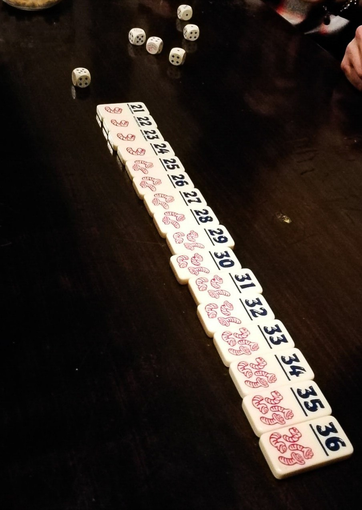

HECKMECK

20 minuti 2-7 8+
Il turno inizia lanciando tutti i dadi insieme. Il giocatore potrà, poi, mettere da una parte
**TUTTI** i dadi che mostrano un valore univoco a sua scelta. La somma dei dadi trattenuti rappresenta il “bottino” del
giocatore (al fine del conteggio dei punti ottenuti ogni verme trattenuto vale “5”).
Durante il proprio turno, si possono rilanciare i dadi quante volte si desidera, ma non è possibile prendere risultati
già trattenuti in precedenza. Ad ogni lancio, quindi, diminuiscono sia i risultati utili che i dadi lanciati
(uno almeno lo avrete tolto…) e, di conseguenza, i rischi aumentano.
Infatti, il turno termina con un insuccesso se:
-dopo un lancio, non ci sono dadi con risultati “utili” da trattenere;
-tra i dadi trattenuti, non è presente almeno un verme;
-non si raggiunge un risultato complessivo di almeno 21
(o maggiore, se la tessera con tale valore non è disponibile per la presa).
Se si è ottenuto un risultato valido, questo può essere speso per:
Prendere la tessera del valore corrispondente sul tavolo. Se assente, è possibile prendere la tessera dal
valore più basso più vicino al risultato ottenuto. La tessera così acquisita viene messa, ben visibile, in cima alla
propria pila. L’altezza della pila tradirà quante tessere ha catturato ogni giocatore, innescando un’inevitabile
“caccia al leader”. Facile, immediato e funzionale!
Rubare una tessera a un avversario. Se il risultato corrisponde esattamente al valore di una delle tessere
in cima alla pila di un altro giocatore, si può fare una delle cose più divertenti del gioco: prenderla e metterla
in cima alla propria pila!
In caso di fallimento -per uno qualsiasi dei motivi precedentemente descritti- il giocatore deve eliminare dal gioco
la tessera con il punteggio più alto e deve restituire al “banco” (sarà, cioè, disponibile per le future prese)
l’ultima tessera acquisita. Il gioco termina quando non ci sono più tasselli da acquisire sul tavolo:
quando questo accade, si conta il numero dei vermi catturati da ogni giocatore. Il vincitore è colui che ha
catturato più vermi.
RECENSIONE
Heckmeck è un gioco consigliato a chi piace la competizione, in cui la strategia e la fortuna sono indispensabili. È semplice e veloce, infatti si possono fare più partite nella stessa serata senza annoiarsi, soprattutto se si è in gruppo.